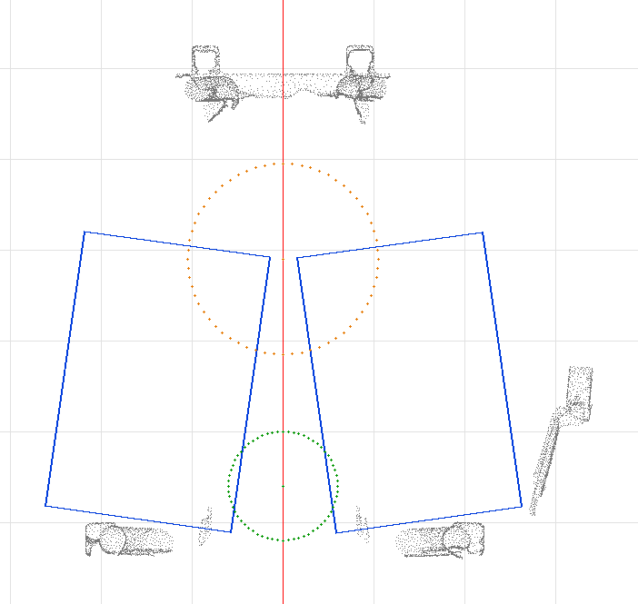
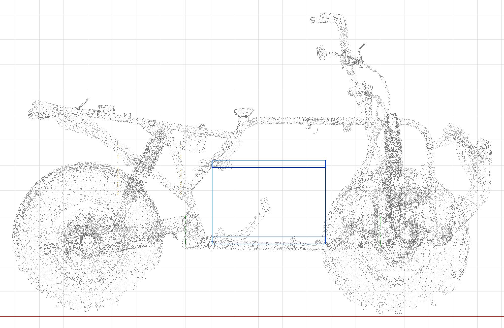
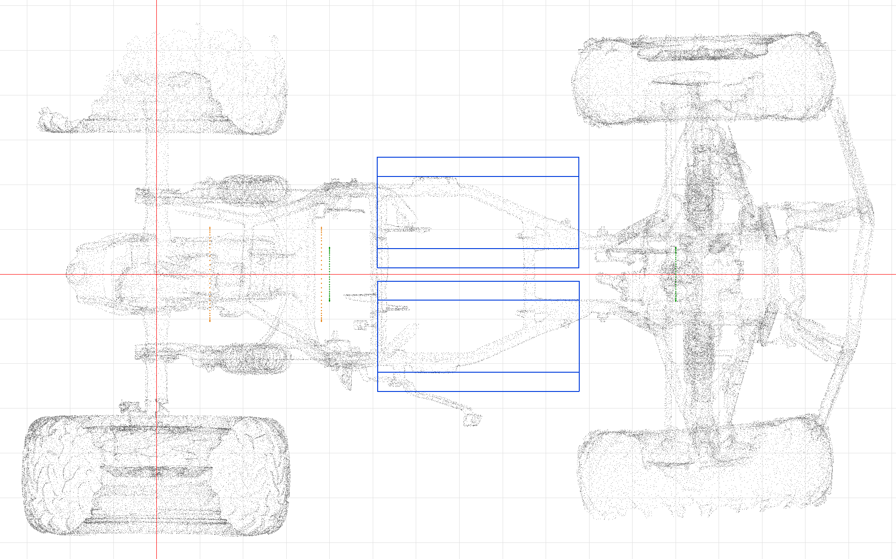

Fabrication design handover
Two battery boxes sit either side of the chassis centreline, each holding half the 26S2P pack. This document gives the geometry needed to start the fabrication design: the enclosure parameters, where each box sits on the vehicle, how the frame around it was checked, and which frame features are close enough to carry a mounting bracket.
The boxes, motor placeholder and prop-shaft keep-out are STEP solids linked below; open them in any CAD package for exact dimensions.
| Parameter | Value | Source |
|---|---|---|
| cell.width | 148.24 mm | CALB L148N58A drawing, W |
| cell.thickness | 26.66 mm | CALB L148N58A drawing, T at 70% SOC |
| cell.height | 102.8 mm | CALB L148N58A drawing, body |
| cell.height_to_stud | 105.9 mm | CALB L148N58A drawing |
| cell.stud_pitch | 110.6 mm | CALB L148N58A drawing |
| cell.pad | 3.0 mm | OWNER: BOM figure, confirm with a measurement |
| block.columns | 8, 9, 9 cells front to rear | owner design brief 2026-09-15 |
| block.column_pitch_x | 152.0 mm | 148.24 mm cell width + 3.76 mm clearance |
| enclosure.internal | 460 x 300 x 200 mm | owner design brief 2026-09-15 |
| enclosure.sheet | 3.0 mm | OWNER: assumed sheet thickness |
| enclosure.compression_wall | outboard | OWNER: assumed |
| electrical.fuses_per_box | 2 | Littelfuse JLLN800 Class T, one per pole |
| electrical.fuse_envelope | 90 x 45 x 60 mm | OWNER: confirm against the datasheet and the holder |
| motor.length | 258.8 mm | SIAECOSYS QSJ138D-90 outline drawing |
| motor.housing_d | 210.0 mm | OWNER: tape-measure the finned housing |
| keepout.axis_z | 340.0 mm | OWNER: confirm from the front differential output height |
The left box sits at vehicle X 743.2, Y 39.2643, Z 440.4765 mm, leaned 82.0 degrees off vertical about the vehicle X axis so its largest face (lid and floor) tilts toward the centreline. The right box is the left box's mirror image through vehicle Y = 0. At the floor, the inboard edges of the two boxes are 30.0 mm apart.
Left box outer-shell corners, vehicle coordinates (mm): (510.2, 15.0, 591.6), (510.2, 216.0, 619.8), (510.2, 57.6, 288.5), (510.2, 258.6, 316.8), (976.2, 15.0, 591.6), (976.2, 216.0, 619.8), (976.2, 57.6, 288.5), (976.2, 258.6, 316.8).
Lid normal, outward from the +Z face: (0.000, 0.990, 0.139). Cell-stack axis: (0.000, 0.139, -0.990).
This sweep tests the frame, the placeholder motor and the propeller-shaft keep-out only; plastics, foot boards, tank and seat are not in the scan.
Grid: 525 placements, 0 pass.
No placement in the swept grid passes all three tests.
[placement] defaults (x=743.2, y=39.2643, z=440.4765, lean_deg=82.0) are not a grid point in this sweep, so no exact-match row exists in the swept grid.
Motor placeholder vs frame (not part of pass, evaluated once): min_frame=0.07 mm, points inside=41066.
chamfer would not help: not evaluated in this run.
Nothing in this grid clears the frame - every one of the 525 placements has real frame points inside the box (inside_frame never reached 0). The least-bad point found, used for the section-*-best.png renders below, is x=793.2, y=-50.0, z=465.0, lean=87.0: min_frame=0.56mm, inside_frame=15580 points, min_motor=178.8mm, min_keepout=0.012mm. This is not a fit; it is the smallest measured intrusion in the swept neighbourhood, shown so the owner can see how close "close" actually is.
Section renders: section-yz-default.png, section-xz-default.png, section-xy-default.png (the committed [placement] defaults); section-yz-best.png, section-xz-best.png, section-xy-best.png (the least-bad point above).



| id | kind | box | face | distance mm | support | rms |
|---|---|---|---|---|---|---|
| engine-bay/cyl/148 | cylinder | right | inboard | 1.1 | 4723 | 0.97 |
| engine-bay/plane/046 | plane | left | inboard | 1.6 | 2088 | 0.24 |
| tank-mounts/cyl/064 | cylinder | left | inboard | 1.8 | 7256 | 0.82 |
| duct-route/cyl/092 | cylinder | left | inboard | 2.8 | 29471 | 0.94 |
| engine-bay/plane/014 | plane | left | inboard | 3.5 | 3225 | 0.14 |
| engine-bay/plane/031 | plane | right | inboard | 4.7 | 2490 | 0.25 |
| engine-bay/plane/053 | plane | right | inboard | 5.8 | 1632 | 0.17 |
| engine-bay/plane/015 | plane | left | rear | 5.9 | 4148 | 0.48 |
| engine-bay/plane/032 | plane | right | outboard | 6.7 | 1630 | 0.19 |
| engine-bay/plane/064 | plane | right | front | 6.7 | 1560 | 0.19 |
| engine-bay/plane/037 | plane | left | front | 7.0 | 1662 | 0.16 |
| engine-bay/plane/010 | plane | right | outboard | 8.7 | 5446 | 0.27 |
| engine-bay/plane/011 | plane | left | outboard | 9.0 | 5085 | 0.18 |
| duct-route/cyl/159 | cylinder | left | inboard | 11.0 | 3398 | 0.56 |
| tank-mounts/cyl/046 | cylinder | right | inboard | 12.3 | 13836 | 0.41 |
| engine-bay/cyl/107 | cylinder | left | inboard | 13.0 | 24932 | 0.77 |
| engine-bay/cyl/028 | cylinder | right | outboard | 13.1 | 26024 | 0.29 |
| rear-flange/cyl/015 | cylinder | right | outboard | 13.1 | 25956 | 0.33 |
| duct-route/cyl/071 | cylinder | right | outboard | 13.5 | 39433 | 0.80 |
| engine-bay/cyl/016 | cylinder | right | outboard | 16.5 | 69197 | 0.30 |
Every plane pickup was fitted by RANSAC and did not pass the scan pipeline's refinement threshold: calliper each one before drilling.